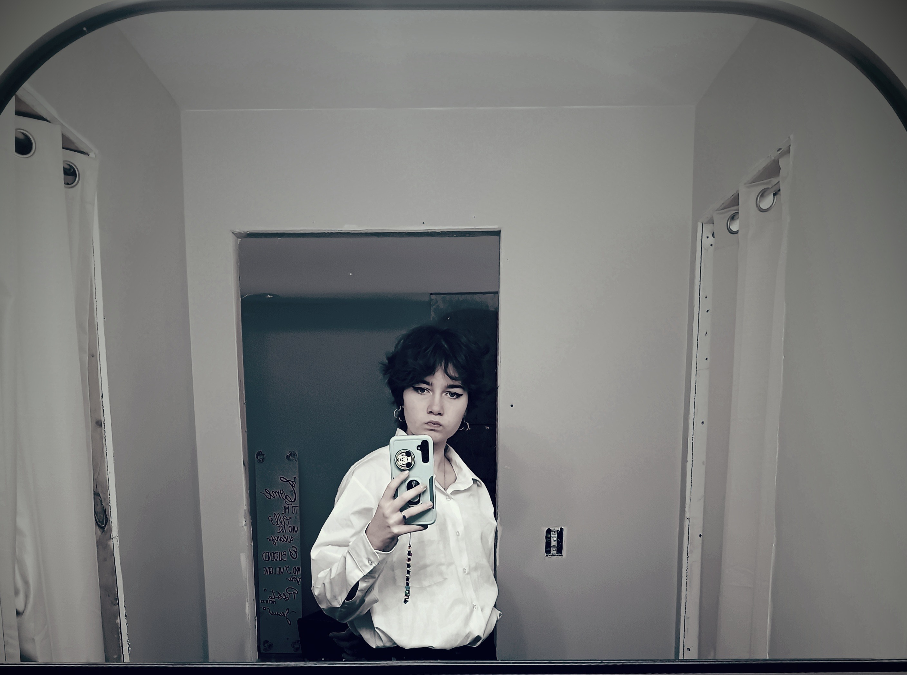
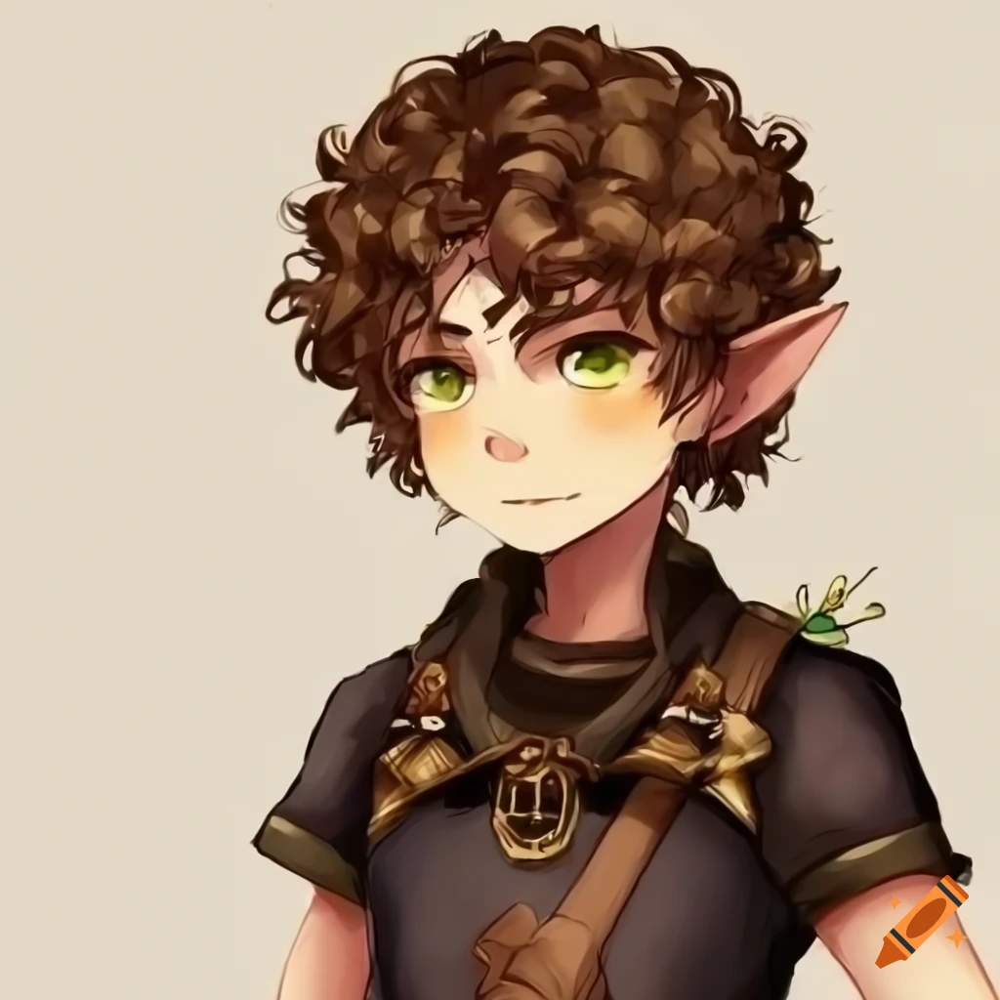

<!DOCTYPE hmtl>

<hmtl lang="en" >
    
   <!--The head section has information ABOUT my web page--> 
    
   <head> 
    <meta charset="UTF-8">
    <meta name="description" content="This is a page about Gabby"> 
    <meta name="keywords" content="Gabby">
    <title>Gabby</title>
    </head>

    <!--The body has the displayed content of my web page-->
    <body> 
       <h1> Gabby's Web Page</h1> 
       <br> <a href="https://mrgeiger.com/index.html" Title="Mr. Geiger's Website">Mr. Geiger</a>

       <h3>Background</h3>
        
    
       <br> <p>I was born in Bryan, Ohio. I lived in Paulding, Ohio for 13 years before my family moved to Williams County.
        I did band in 5th and 6th grade, I played the B flat clarinet. I have 2 dogs and a cat. Where I lived before I had an average of about 10-15 cats a year.
        Whenever my brother and I didn't have school we would go outside, play in the house, watch movies, play games.
        My family moved right when COVID hit, it really wasn't the best time to move but we had to move out before the first of April. <br>
    </p>
    
    <h3>My Family</h3>
    
    <p> I'm adopted, so I have 2 brothers. 1 being my biological brother,
        while the other is the one I live with. My parents who adopted me would be my cousins if they did't adopt me.
        My biological mom couldn't take care of me and my older biological brother, because she was a single parent, so she asked my mom if she would adopt me. 
        My mom wanted kids and couldn't bear any at the time so she said yes.
        I was brought home with my parents the day I was born, but I wasn't offically adopted til of August 27th the next year. I was 8 months when it was offical.
        2 years after I was born, my little brother was born. Mom says he looked like my dad when he was born. My biological brother who is 19 doesn't plan to go to college.   
        
    </p>
    
    <h3>Pets</h3>
    
    <p> Growing up I had many pets. My family had 2 dogs and a cat when I was born. The 2 dogs names were Zoey and Max.
        Max died when I a baby so I don't know how he died. Zoey died of old age. My parents got another dog when I was very little, his name was Damian.
        Max was a Dane, Zoey was a Black Lab mix I think, And Damian was a Great Dane.
        <br>The cat we had, he's name was Lucius. He didn't like me at all. Well, he didn't like any female human but my mom.
        The only time he was able to run around without being chased by a 2-3 year old girl was during naptime.
        Over the years we had many cats, they were strays and we fed them so they stayed around.
        On average a year it was atleast 10-15 cats a year. Most of them were kittens going to be a young adult cat.
        We also had a long-haired wenier dog, and her name was Bella. <br>My dad had gotten her for my little brother's 3rd birthday.
        We didn't have her long because my mom opened the door to let her out, and Bella chased a squirel to the road and gotten ran over.
        Right now we have 2 dogs and a cat. The dogs names are Sophie and Harold. Sophie is what we think is a Beagle-Eskimo mix. Harold is a bassett hound. <br>Sophie is a really loud barker and won't stop barking till you yell at her to stop.
        Harold can be a grumpy old man sometimes, usually when it's his bedtime or when he's tired. I have a dark grey tabby cat, his name is Echo. Echo can be what I call a gremlin at times, but is a big cuddle bug. Harold and Echo didn't get along at first, 
        I was afraid that Harold would eat Echo. When I went to camp for a week however, they gotten along. Now they are best buds. Echo is not quiet if he's walking, you can hear the paddering of his feet as he runs around the house.


    </p>

    <h3> Hobbies</h3>
   
    <p>
        <ul>
        <li>Karate- Okinawain stlye </li>
        <li>Arts and Crafts</li>
        <li>Video Games that aren't gorey</li>
        <li>Texting, calling, and hanging out with friends</li>
        <li>Listening to music/ <strong>DND</strong> podcast</li>
        <li>Reading Fanasty books/ graphic novels</li>
        <li>Taking a walk in the woods that my family owns</li>
        <li>Watching Movies/Shows</li>
        <li>Play<strong>DND</strong></li> <br> 
        </ul>
     
    </p>
    
    <h3>Parents</h3>

    <p>
        My Parents both lived in Williams County before they moved to Paulding to have a family.
        My mom lived in Bryan, Ohio, while my dad moved around in Williams County.
        How my parents met well, my dad was dating my mom's best friend. Once my parents were dating, and graduated my parents moved to Pioneer so my mom could go to nursing school to get her RN. RN means Registered Nurse.
        My dad went into the work field as a contractor. Mom had a part time job in a nursing home along with going to school.
        Once my mom had her RN, they moved to Paulding to start a family. To this day my mom works in Cath Lab and IR, and my dad is still a contractor.

    </p>

    <h6>Copyright &copy; 2024 Gabby</h6>

</body>


</hmtl>